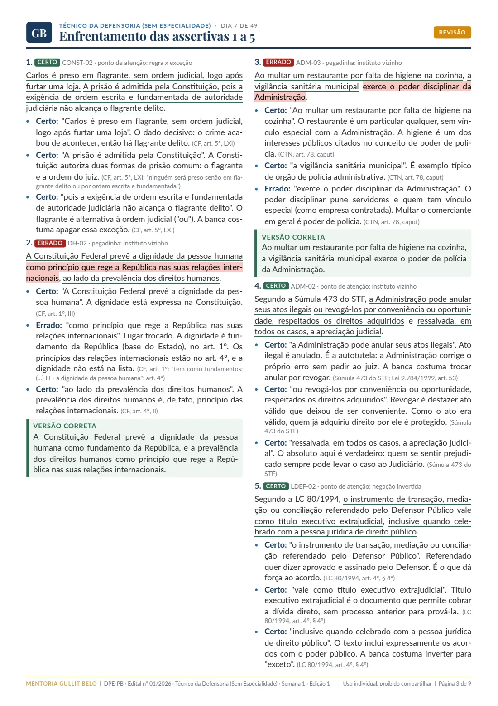
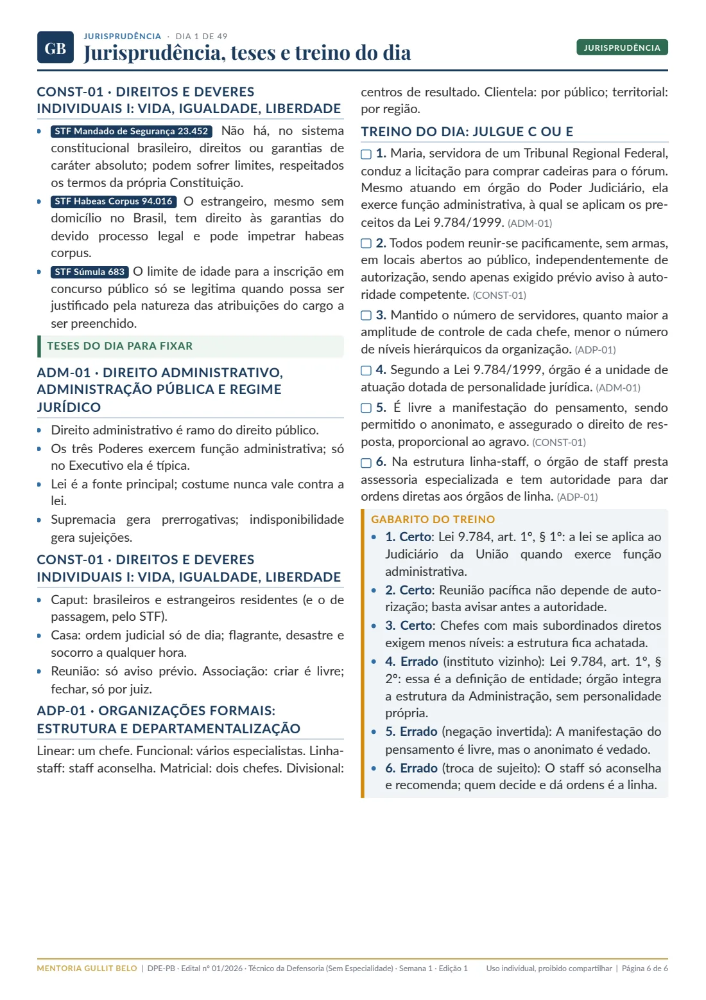
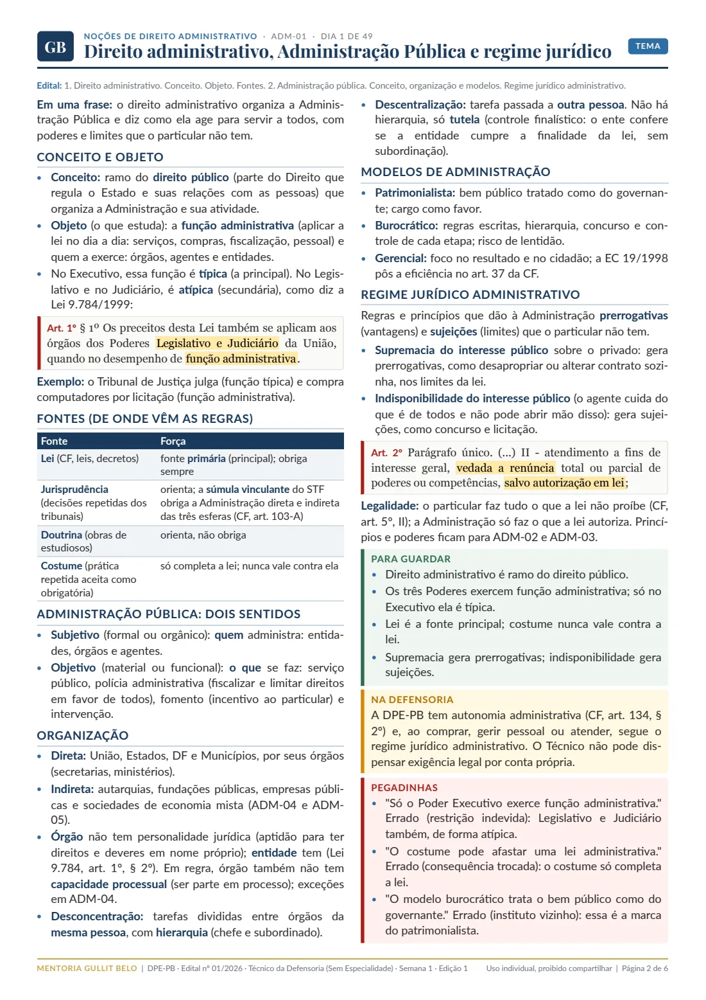
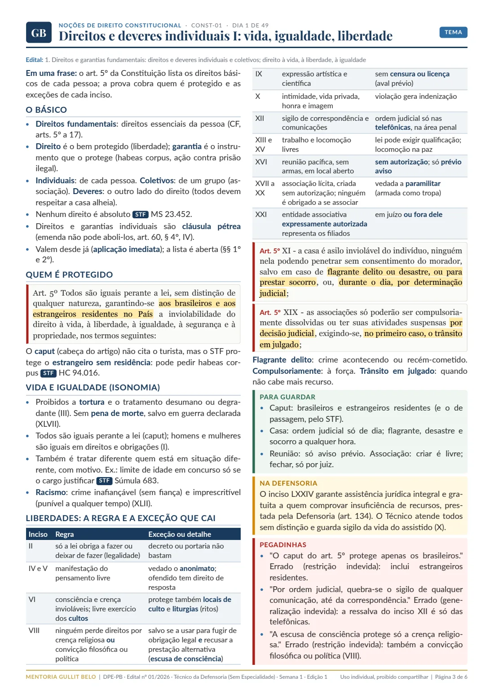
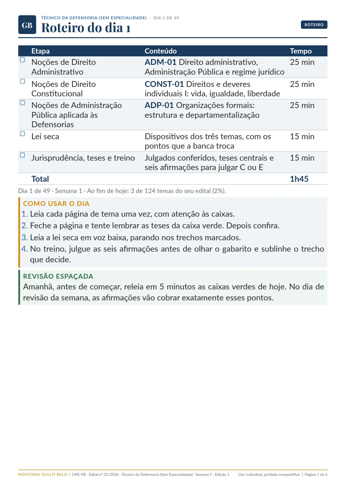
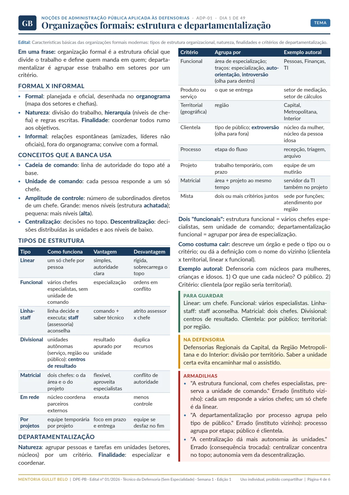
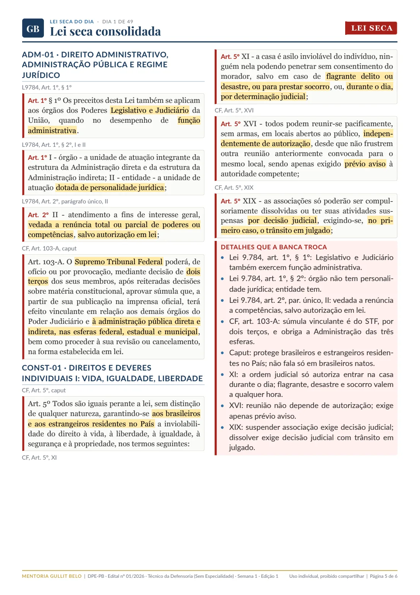

Técnico da Defensoria · DPE-PB · FCC
Escrevi este material para o edital da Defensoria Pública da Paraíba e para quem vai começar do zero. Cada dia tem três temas em linguagem simples, a lei que cai, os julgados que a FCC cobra e seis afirmações para treinar. Você só segue a ordem até a prova.
R$ 197 ou em até 12x · Semana 1 liberada na compra · garantia de 7 dias



O edital em quatro números
A prova objetiva tem 60 questões. As 40 de Conhecimentos Específicos têm peso 2, e no desempate conta primeiro quem acertou mais Específicos e depois Português.
Para quem está começando
Cada página fica no que a prova cobra, sem debate de doutrina. Veja três trechos reais do Dia 1.
A primeira linha de cada tema diz o essencial, antes de qualquer detalhe.
"O direito administrativo organiza a Administração Pública e diz como ela age para servir a todos, com poderes e limites que o particular não tem."
Nenhuma palavra técnica fica sem tradução na primeira vez que aparece.
"Órgão não tem personalidade jurídica (aptidão para ter direitos e deveres em nome próprio); entidade tem."
A afirmação errada, a técnica que a banca usou e a correção, lado a lado.
"A escusa de consciência protege só a crença religiosa." Errado (restrição indevida): vale também para convicção filosófica ou política.
Como a banca erra
Antes de escrever, analisei 39 provas da FCC com as matérias deste edital, de Defensorias de vários estados (inclusive a da Paraíba) e de cargos de nível médio do Legislativo e do Executivo. Foram 1.556 questões e 5.842 alternativas erradas. Veja um exemplo de Legislação da Defensoria:
LC nº 80/1994, art. 4º, § 8º
"Se o Defensor Público entender inexistir hipótese de atuação institucional, dará imediata ciência ao Defensor Público-Geral, que decidirá a controvérsia, indicando, se for o caso, outro Defensor Público para atuar."
Quem decide quando o Defensor recusa um caso é o chefe da instituição.
Afirmação no estilo da banca
"Se o Defensor Público entender inexistir hipótese de atuação institucional, dará imediata ciência ao Conselho Superior da Defensoria Pública, que decidirá a controvérsia."
Errada. A troca de órgão é a técnica que a FCC mais usa em Legislação da Defensoria no nível médio. Por isso o material traz quadros de "quem faz o quê" para cada órgão.
Teste rápido
São afirmações autorais, no estilo da banca, tiradas do material. Responda e veja o comentário com o fundamento.
O que vem no material
Todos os itens do edital do Técnico, inclusive os que costumam ficar para depois, como orçamento público, controle, regime previdenciário, ações afirmativas e a rede de enfrentamento à violência contra a mulher. Toque em uma matéria para ver o que a FCC mais cobra.
Como é um dia




Entrega
A Semana 1 é liberada na compra. As outras chegam às segundas-feiras. Quem entra depois baixa na hora as semanas já liberadas. A prova está prevista para 28 de fevereiro, então sobram mais de dois meses para revisar.
Acesso até a prova
Técnico da Defensoria (Sem Especialidade), Edital nº 01/2026.
Compra pela Kiwify, com acesso imediato à Semana 1.
Garantia de 7 dias. Baixe a Semana 1, estude e, se não for para você, peça o reembolso pela Kiwify dentro de 7 dias da compra.
Perguntas
O material foi escrito pensando em você. Cada termo é explicado na primeira vez que aparece, e cada página fica no que a prova cobra. Leia o Dia 1 grátis e veja se o jeito de explicar funciona para você.
O roteiro soma 1 hora e 45 minutos, com os três temas, a lei seca e o treino. São 6 dias de estudo e 1 de revisão por semana.
Para o Técnico, não. O edital prevê só a prova objetiva, com 60 questões. A discursiva é dos cargos de Analista.
Tem seis afirmações Certo ou Errado por dia e 36 na revisão de cada semana, escritas no estilo da FCC, com gabarito comentado. São autorais: nenhuma questão de prova é reproduzida.
Toda lei sai do texto vigente, e todo julgado é conferido no site oficial do tribunal. Se uma norma do edital mudar até a prova, você recebe a página corrigida na área de membros e um aviso por e-mail.
As semanas já liberadas ficam disponíveis na hora da compra. O cronograma termina em dezembro, e a prova está prevista para 28 de fevereiro de 2027.
Pode, é assim que o material é entregue: um PDF por semana na área de membros da Kiwify. O uso é individual e o compartilhamento é proibido.
Quase vinte aprovações em concursos de tribunais (estaduais, federais, do trabalho e eleitorais), do Ministério Público, da AGU, do INSS e de universidades, além da OAB. Hoje sou servidor no TRT. Criador do @mentoriagb.
As seis páginas do primeiro dia estão abertas. Leia, faça o treino e decida depois.